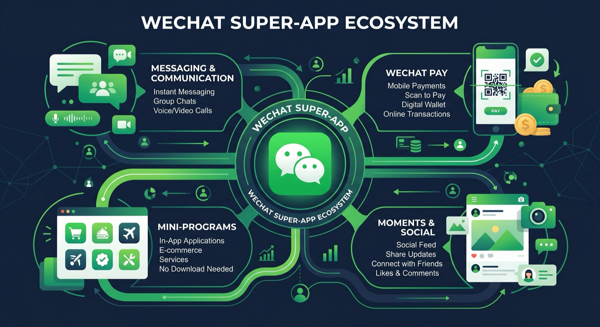

WeChat運用代行では何を依頼できますか？
公式アカウントの開設・認証支援、中国語コンテンツの企画と配信、WeChat広告とモーメンツ配信、ミニプログラムとの連携、効果測定とレポーティングです。使える機能はアカウント種別と対象地域で異なるため、依頼範囲は相談時に確認します。
WeChat公式アカウント 運用代行
ウィーチャットマーケティングとして、公式アカウントの開設・認証支援、中国語コンテンツの企画・配信、広告とモーメンツ、ミニプログラム連携、効果測定までを日本語の窓口で支援します。導入前の整理は活用ガイドへ。

Scope
使える機能はアカウント種別と対象地域で異なります。次の範囲を、依頼内容に合わせて組み合わせます。
| 対応範囲 | 内容 | 相談時に確認すること |
|---|---|---|
| WeChat公式アカウント開設・認証支援 | 申請主体、必要書類、管理者権限の整理と、開設・認証手続きの支援。 | 法人の所在と形態、希望するアカウント種別、委託終了後の管理者。 |
| 中国語コンテンツ企画・配信 | 対象のお客様に合わせた中国語の投稿企画と、公式アカウントからの配信。 | 言語、本数、修正範囲、返信を人が行う時間帯。 |
| WeChat広告・モーメンツ配信 | 広告とモーメンツを使った配信。実施するかどうかはキャンペーンごとに決めます。 | 対象地域、配信期間、クリエイティブの有無、広告を使うか。 |
| WeChatミニプログラム連携 | 予約や会員などの機能が必要な場合に、ミニプログラム開発とつなぎます。 | 今の予約・顧客管理の方法、自動化する範囲、人が確認する範囲。 |
| 効果測定・レポーティング | 閲覧や友だち追加と、問い合わせ・予約・来店を分けて報告します。 | 計測できる経路と、電話予約など追えない経路の扱い。 |
With Mini Program
情報発信と問い合わせは公式アカウント、予約・会員・決済などの機能はミニプログラム、というように目的を分けて検討します。機能開発の相談はWeChatミニプログラム開発へ。WeixinとWeChatの違い、申請前の確認項目は活用ガイドに整理しています。
開発の費用と期間の目安を見る
公式アカウントの開設・認証支援、中国語コンテンツの企画と配信、WeChat広告とモーメンツ配信、ミニプログラムとの連携、効果測定とレポーティングです。使える機能はアカウント種別と対象地域で異なるため、依頼範囲は相談時に確認します。
定額の単一料金はありません。対象とするお客様、キャンペーンの範囲、KOLや広告の規模を確認したうえで個別にお見積もりします。料金の見方は料金ページ、依頼はお問い合わせからです。
公式アカウントは情報発信や問い合わせの窓口、ミニプログラムは予約や会員などの機能をWeChat内で動かす仕組みです。運用は本ページ、機能開発はミニプログラム開発でご相談ください。違いの整理は活用ガイドにまとめています。
必須ではありません。コンテンツ配信だけ、広告、KOL起用は別々に範囲を決められます。規模が費用に影響するため、必要なものだけを見積もります。KOL施策の考え方はKOL/KOCページも参照できます。
申請できる主体、必要書類、管理者の置き方は、希望するアカウント種別と対象地域によって異なります。一律の可否や固定の審査期間としてはご案内していません。相談時に、法人の条件と使いたい機能を確認して進めます。
閲覧や友だち追加などの反応と、問い合わせ・予約・来店は分けて報告します。電話予約など計測できない経路は、把握できた範囲と不明な範囲を区別して残します。